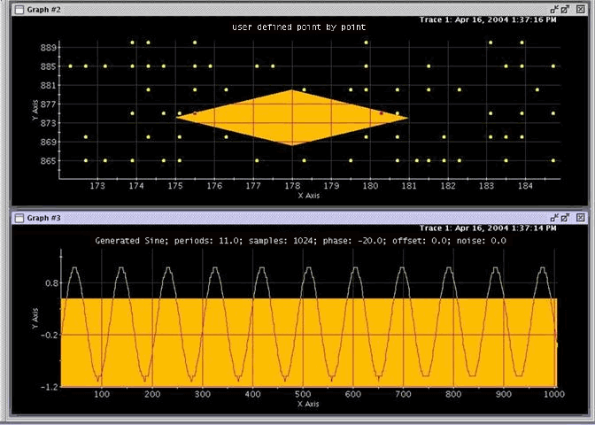

Test Mask...
This menu item allows users to mask an arbitrary area of a graph. Typically, a test mask is primarily used to represent some specified limitation. The test mask provided by the Waveform Graphs Tool can indicate the masked points (that imply usually the failed points) with an arbitrary color. The test masks are set up in the Test Mask dialog box. See Mask Waveform.
